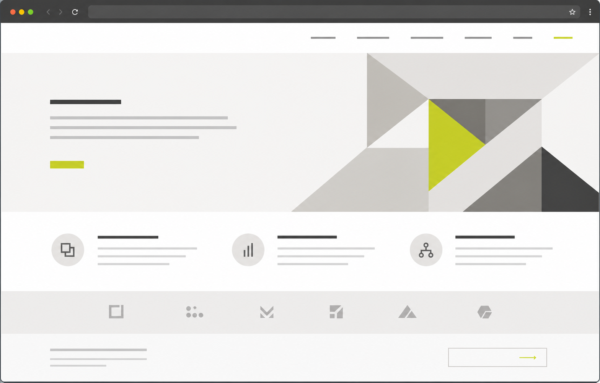

State the core service and who it is for before visual treatment takes over.
Sample deliverable / 01
Website
Diagnostic Brief
A practical review of the moments between first impression and inquiry. This fictional B2B example shows the level of evidence and direction included in a real diagnostic.
01 / Executive pulse
The experience signals quality, but delays a decision.
The diagnosis is not a redesign wish list. It isolates the few decisions that make a qualified visitor either continue or leave.
Let a visitor find relevant capabilities, outcomes and reasons to trust without hunting through the page.
Place the next decision at the point where interest is strongest, not after a long visual scroll.
Keep the visual character. Improve hierarchy, proof and contact momentum around it.
02 / Observed evidence
One screen, two missed decisions.
Illustrative screenshot of the fictional sample site. Annotations show where the diagnostic begins, rather than presenting invented performance data.

Offer is absent Inquiry is deferred03 / Findings
Three changes, ordered by decision impact.
Each recommendation is tied to something observable on the page. No claims about traffic, conversion rate or revenue are made without access to source data.
Priority 01
Lead with a clear offer, not an abstract promise.
The opening area creates an impression but gives a qualified buyer no reason to continue or self-identify.
Observed evidence
Visual treatment dominates the first screen. Service focus and decision context arrive only after scrolling.
Recommendation
Add a one-line positioning statement and two high-intent service paths beside the opening visual.
Priority 02
Turn credibility into usable proof.
Trust signals are present, but a visitor cannot quickly identify the relevant capability, result or delivery scope.
Observed evidence
Capabilities, logos and claims are presented as a single block without decision-level context.
Recommendation
Introduce a compact proof index with service type, client challenge and a two-line outcome narrative.
Priority 03
Ask for the brief while intent is high.
Visitors can admire the work, but the next action is not connected to the proof that created interest.
Risk
A qualified visitor must self-initiate the next step after the page has already lost momentum.
Recommendation
Use a project-level CTA that asks for a short brief, with the expected response and timeline stated plainly.
04 / Conversion path
Give each page a single job.
The improved path does not require more content. It gives existing content a visible sequence from confidence to contact.
Arrive
Understand the offer and identify the relevant sector within the first scan.
Recognise
Find comparable work with enough context to assess fit.
Trust
See the team, process and response expectation without searching for them.
Inquire
Send a concise project brief at the moment interest becomes specific.
05 / Action plan
Next 14 days
A small implementation sequence that improves the decision path before considering a broader rebuild.
- Days 1-2Confirm priority sectors, the ideal inquiry and the proof a visitor needs before contact.
- Days 3-6Reorder the homepage around positioning, credibility proof and a visible short-brief entry point.
- Days 7-10Create proof-index rules and one reusable service-detail template.
- Days 11-14Review the mobile decision path, contact friction and the first response experience.
How to read this
This is a sample of an independent diagnostic, not a client case study. A live review is based on the company's own public pages, stated goals and any access they choose to share.
Recommendations are deliberately limited to what can be verified. There are no invented results, visitor counts or claims of work for similar brands.